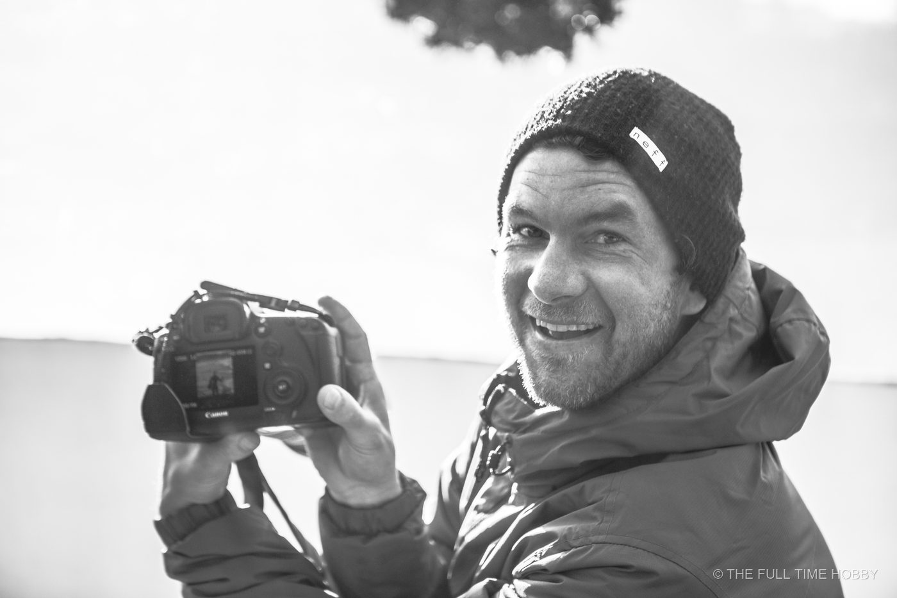
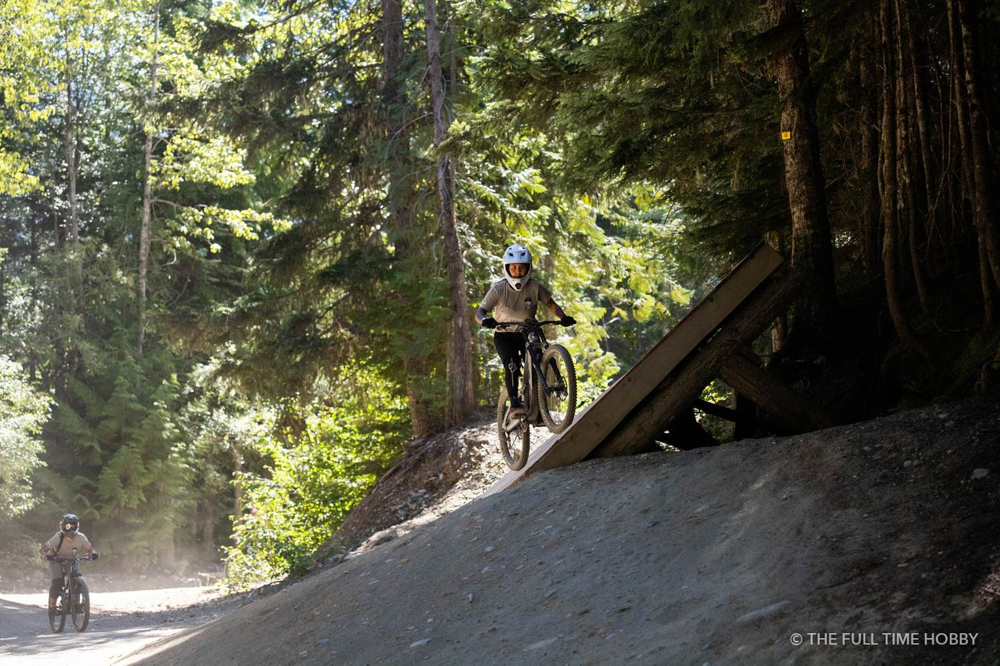

Why rent?
- Try before you buy. Find out whether you actually need that lens.
- One-off jobs. A wedding, an event, a trip to see the eagles: rent for the day and keep the cash.
- Backup. A second body on a paid job is cheap insurance.
- No drive to Vancouver. My rental gear lives in Squamish, 45 minutes from Whistler and an hour from Vancouver.
Mountain biking, skiing and action
Rent: Canon R5 + 70-200mm f/2.8.
Action needs fast autofocus and a fast shutter. The R5's subject tracking makes it much easier to keep a rider or skier sharp, and the 70-200 f/2.8 lets you stay back from the line and still fill the frame, with a fast aperture for dark forest trails. For more, see Squamish adventure photography.

Wildlife and eagles in Brackendale
Rent: Tamron 150-600mm (plus the RF-EF adapter on an R5).
Eagles, bears and seals need reach, and you should never get close to wildlife for a photo. A 150-600mm lets you stay well back. In winter, the bald eagles along the Squamish River in Brackendale are a classic subject. Bring a monopod: long lenses get heavy fast.
Weddings and events
Rent: Canon R5 + 70-200mm f/2.8, and a location strobe if you're shooting portraits outdoors.
The 70-200 is the workhorse for ceremonies and speeches, when you can't be in people's faces. A second body as a backup is never a bad idea on a day that can't be reshot.
Outdoor portraits
Rent: Godox AD600 Pro.
A battery-powered 600Ws strobe gives you enough power to balance against bright sky or shoot into the sun, on a mountain, a beach or a forest trail. It's the difference between a silhouette and a properly lit portrait at golden hour.
Real estate
Rent: Canon R5.
High resolution gives you room to crop and straighten, and the dynamic range helps with bright windows. Pair it with a wide lens and a tripod.
Video
The R5 shoots up to 8K, which gives you room to crop and stabilise in post. Bring plenty of batteries and fast cards, and plan for the heat on long takes.
Cold-weather tips
- Batteries drain fast in the cold. Keep spares in an inside pocket.
- Let gear warm up slowly in a sealed bag when you come inside, to avoid condensation.
- See winter photography in Whistler & Squamish for more.
Current rental prices
- Canon R5: $150 / day
- Canon 70-200mm f/2.8 EF: $65 / day
- Tamron 150-600mm EF: $50 / day
- Godox AD600 Pro: $60 / day
- RF to EF adapter: $10 / day
Prices and availability are live on my gear rentals page, booked through Rented Local, with pickup in Squamish.